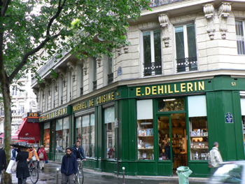
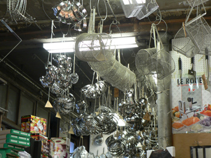
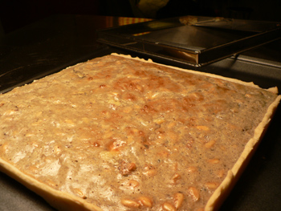

E. Dehillerin and square tarts

When people ask about kitchen supply shopping in Paris, I tell them to go to E. Dehillerin behind Les Halles. Mom and I went there years ago when I was living in Tours, and although I was too young to really appreciate it, I could tell it was different. It’s crowded and old inside. It’s the opposite of, say, Crate & Barrel. But it’s a cook’s paradise, especially if you take tart-making seriously.

I could have filled my suitcase with various goods, but I settled on a rolling pin (12€) and a square tart ring (9€), which I had never seen before. Dehillerin has tart rings and pans in hundreds of sizes and shapes. I felt giddy. Later in the day, I found my dream book: Quiches, cakes et tartes salées, and I’m gearing up for a summer of salty, square tarts.
Last night was my first attempt: a blue cheese–pine nut quiche:

The filling, which I won’t bother to convert because it wasn’t that fabulous, contained bleu d’Auvergne, fromage blanc, nuts, and three eggs. The recipe called for walnuts, but I only had a few in the freezer, so I used pine nuts instead. The shape of the tart was the most exciting part of dinner. Cutting squares from a square is so much easier than cutting wedges from a circle.
My only problem with the cooking was the baking sheet, which warped itself into a big “V” in the oven. Does anyone have a baking sheet that doesn’t warp? This is one of those Chicago metallic ones that feels so heavy and sturdy, but it’s a piece of junk just like the last one. My square ring won’t fit on my black steel pan, but maybe I can find a bigger one of those. It’s annoying to look in the oven and see your tart’s filling hanging on for dear life, teetering near the rim. Any bakeware recommendations are appreciated.
Comments
I have two lovely baking sheets that I received as a christmas present from my mom. I could ask her where they are from. I haven’t had any warping from them and they’ve gotten some serious use in the past six months.
The insulated baking sheets warp significantly less, but I’m not sure whether you’d be satisfied with the bottom crust on one of those. Could you use foil or parchment on top of a baking stone?
You could get a half sheet tray from a restaurant supply store, they are about as solid as the come. They’re a little bit large, though, so it’s definitely a commitment. I have a square quiche pan with a fluted edge and a false bottom that I love (now packed in storage along with most of my other baking supplies). I don’t usually cut the quiches or tarts in squares, though, I cut them first in squares or rectangles and then again in triangles. Something about eating the tip makes me happy.
My half-sheet pans are from The Baker’s Catalogue (the king arthur flour folks) and they are solid. No warping in years of use. $18 each or two for $30 I think. Probably cheaper from a restaurant supply place though.
I’m glad you asked this question, as I have had this sheet pan problem, too. Now I have some ideas for acquiring a better one.
I long to go to Dehillerrin on day, but not for a square tart pan, because I do have one of those- which I bought in Pittsburgh-in the Strip district!
I am very fond of it, and love to make square tarts, both sweet and savory. I’m not sure why I find the shape so endearing, but I do.
I remember our trip to Dehillerrin and how great it is in there!
Would turning the oven down a little help with the warping? I think your oven runs hot anyway, doesn’t it?
I, too, like those square shapes. Very Martha Stewart-y. I like square layer cakes, too. I also have a square tube pan I’m fond of.
Weird about your pan – my Chicago Metallic is a heavy workhorse… As for those square tart pans – oooooooh, envy. There was that article in the LAT about square tarts just a few weeks ago! Yum.
Add a comment